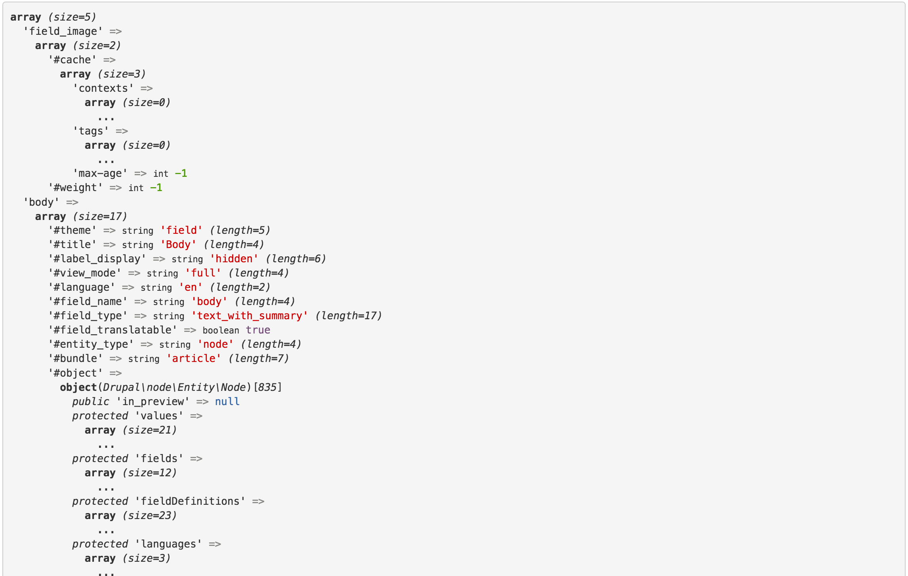
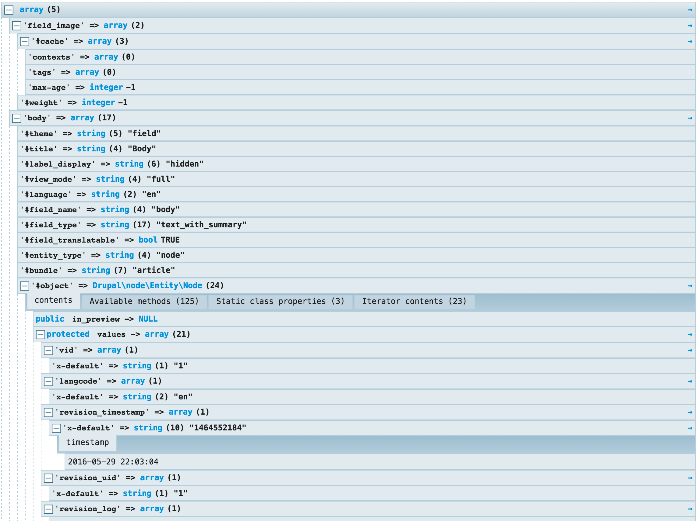

Le theming avec Drupal 8
A la découverte de
Twig
Twig
- Nouveau moteur de template de Drupal 8
- Projet indépendant, utilisé par ailleurs
- Documentation : http://twig.sensiolabs.org/documentation
Twig VS PHPTemplate
- Syntaxe propre plus concise pour manipuler/parcourir des variables
- Twig est sécurisé par défaut sur Drupal 8 (auto échappement)
- Twig est extensible : filtres
- Héritage / inclusion de templates permettant de limiter la duplication de code
Syntaxe propre plus concise pour manipuler/parcourir des variables

Débuter avec Twig
- Activer le debug de Twig : services.yml
- Les fonctions de debug : dump(var)
- Un peu mieux avec Kink : kint(var)
- Ou encore xdebug : Twig xdebug
Activer le debug de Twig : services.yml
parameters:
twig.config:
debug: true
auto_reload: true
cache: false

Une extension chrome : Drupal template Helper
{{ dump(content) }} : peut mieux faire
{{ kint(content) }} : mieux mais très looooooonnnnnng
{{ breakpoints() }} : top !

Les surcharges de templates
avec
function MODULE_theme_suggestions_page_alter(array &$suggestions, array $variables) {
if ($node = \Drupal::routeMatch()->getParameter('node')) {
$suggestions[] = 'page__flocon__' . $node->getType();
$suggestions[] = 'page__flocon__node_' . $node->id();
}
}
- Première configuration de base lors de l'installation
- Eviter de devoir refaire le même type de configuration, encore et encore
- Générer un site web prêt à l'emploi
- Mettre en place une usine à site
Twig et la sécurité
https://www.drupal.org/node/2296163 https://www.drupal.org/node/2311123- Première configuration de base lors de l'installation
- Eviter de devoir refaire le même type de configuration, encore et encore
- Générer un site web prêt à l'emploi
- Mettre en place une usine à site
Un peu de syntaxe
- Première configuration de base lors de l'installation
- Eviter de devoir refaire le même type de configuration, encore et encore
- Générer un site web prêt à l'emploi
- Mettre en place une usine à site
Les surcharges
- Première configuration de base lors de l'installation
- Eviter de devoir refaire le même type de configuration, encore et encore
- Générer un site web prêt à l'emploi
- Mettre en place une usine à site
Extension et inclusion
- Première configuration de base lors de l'installation
- Eviter de devoir refaire le même type de configuration, encore et encore
- Générer un site web prêt à l'emploi
- Mettre en place une usine à site
La manipulation des variables
- Première configuration de base lors de l'installation
- Eviter de devoir refaire le même type de configuration, encore et encore
- Générer un site web prêt à l'emploi
- Mettre en place une usine à site
Fournir ses propres variables
- Première configuration de base lors de l'installation
- Eviter de devoir refaire le même type de configuration, encore et encore
- Générer un site web prêt à l'emploi
- Mettre en place une usine à site
Le multilinguisme
- Première configuration de base lors de l'installation
- Eviter de devoir refaire le même type de configuration, encore et encore
- Générer un site web prêt à l'emploi
- Mettre en place une usine à site
Créer ses propres filtres
- Première configuration de base lors de l'installation
- Eviter de devoir refaire le même type de configuration, encore et encore
- Générer un site web prêt à l'emploi
- Mettre en place une usine à site
Les bonnes pratiques
- Toujours envoyer aux templates des render array
- Attention au filtre raw
- Ne pas hésiter à créer ses classes au sein du template
Un profil d'installation ?

Pourquoi faire ?
- Première configuration de base lors de l'installation
- Eviter de devoir refaire le même type de configuration, encore et encore
- Générer un site web prêt à l'emploi
- Mettre en place une usine à site
Les Distributions
ne sont ni plus ni moins que des profils d'intallation concus pour fournir un ensemble de fonctionnalités orientées vers un objectif précis et commun
Mais pourquoi alors ne pas utiliser une de ces distributions déjà disponible ?
Le choix d'une distribution
doit être fait avec une très grande précaution
- Utilisation dans sa configuration exacte (ou presque)
- Dépendance vis à vis de la distribution pour MAJ
- Qualité du code / Configuration / Générique
- L'appropriation d'une distribution peut être très chronophage
Sinon on se retrouve très vite à construire un site en devant se battre CONTRE Drupal et non plus AVEC
Eviter
Les distributions Potemkine*
* en référence à l'expression Villages Potemkine
Oooohhhhh, c'est beau !
Aaarrrrggghhhhhhhhhh
Avantages d'un profil d'installation
selon une approche générique et modulaire
- Gain de temps
- Reproductibilité
- Consistance
- Amélioration continue
- Capitalisation
Créer son profil d'installation
[nom_profile].info.yml
name: Usine
type: profile
description: Génération site web.
core: 8.x
dependencies:
# Core modules
- node
# Contrib modules
- token
# Custom modules
- uas_taxonomy
themes:
- uas_base
- bootstrap
- seven
Ajout de dépendances optionnelles
[nom_profile].info.yml
configurable_module:
uas_actualite:
label: Actualités
description: Fournit des contenus pour publier des actualités, avec commentaires.
enabled: true
uas_publication:
label: Publications
description: Fournit des contenus pour publier des publications.
enabled: true
uas_slider:
label: Diaporama page accueil
description: Fournit un bloc de contenu pour créer des diaporamas.
enabled: true
Personnalisation des étapes
[nom_profile].profile
/**
* Implements hook_install_tasks().
*/
function [nom_profil]_install_tasks(&$install_state) {
return [
'configurable_profile_dependencies' => [
'display_name' => t('Features'),
'display' => TRUE,
'type' => 'form',
'function' => 'Drupal\uas\Form\ConfigurableProfileDependenciesForm',
],
'webmestre_account' => [
'display_name' => t('Webmestre Account'),
'display' => TRUE,
'type' => 'form',
'function' => 'Drupal\uas\Form\WebmestreAccountForm',
],
];
}
Personnalisation du profil
[nom_profil].install #pour effectuer certaines taches lors de l'installation initiale de votre profil
[nom_profil].services.yml #pour déclarer des services
[nom_profil].routing.yml #pour déclarer des routes spécifiques
[nom_profil].librairies.yml #pour déclarer des librairies à charger
[nom_profil].permissions.yml #pour déclarer des permissions spécifiques
etc. etc. #bref, tout fichier de configuration que l'on peut retrouver dans un module Drupal 8 classique
Mais il vaut mieux déporter toute fonctionnalité supplémentaire dans un module. Gardez le profil d'installation aussi simple que possible, uniquement pour altérer / compléter le processus initial
Configuration initiale du site
2 méthodes à disposition
- via les fichiers de configuration placés sous le répertoire config/install ou config/optionnal
- via l'implémentation de hook_install()
Config/install : configuration déployée à l'installation du module
Config/optional : configuration dépendante de modules tiers, déployée lors de leurs installations
Configuration via fichier YAML
#File system.theme.yml
admin: seven
default: uas_base
langcode: en
- Automatisation export des configurations avec Configuration Development (UI / Drush)
- Redonner aux modules le pouvoir sur la configuration
Configuration via hook_install()
function [mon_profil]_install() {
$uas->createMenuLink($node->title, 'entity:node/'.$node->id(),
2, 'footer');
}
- Quand la configuration peut être aussi assimilé à du contenu (menu, block)
- Pour fournir une configuration dynamique
- Pour générer du contenu par défaut pour faciliter l'appropriation du site
- Pour ne PAS donner aux modules le pouvoir sur la configuration
Création de packages fonctionnels
les plus génériques possibles
- Styles d'image adaptatif
- Types de paragraphs
- Multilinguisme
- Permissions et Role
- Types de contenu
- Profil utilisateur
- etc.
Exemple : les styles d'images

Création des styles adaptatifs

Liste des configurations créées
[flocon@detoile /srv/www/uas]drush config-list | grep image.style
image.style.uas_large
image.style.uas_medium
image.style.uas_mobile
image.style.uas_narrow
image.style.uas_normal
image.style.uas_thumbnail
image.style.uas_wide_large
image.style.uas_wide_medium
image.style.uas_wide_mobile
image.style.uas_wide_narrow
image.style.uas_wide_normal
image.style.uas_wide_thumbnail
responsive_image.styles.uas_full_content
responsive_image.styles.uas_full_screen
Création du module
name: 'Uas Image'
description: 'Provide image styles and responsive settings'
type: module
core: 8.x
package: Uas
dependencies:
- responsive_image
- image
config_devel:
- image.style.uas_large
- image.style.uas_medium
- image.style.uas_mobile
- image.style.uas_narrow
- image.style.uas_normal
- image.style.uas_thumbnail
- image.style.uas_wide_large
- image.style.uas_wide_medium
- image.style.uas_wide_mobile
- image.style.uas_wide_narrow
- image.style.uas_wide_normal
- image.style.uas_wide_thumbnail
- responsive_image.styles.uas_full_content
- responsive_image.styles.uas_full_screen
Export de la configuration
[flocon@detoile /srv/www/uas]drush cd-em uas_image

Maintenance des configurations
- Configuration indépendante du module : on peut déinstaller et supprimer le module
- Configuration dépendante du module : les configurations sont supprimées si le module est désinstallé
dependencies:
enforced:
modules:
- uas_image
Cas d'usage des profils d'installation
Une usine à site
Générer un type de site
- Site événementiel
- Site One page
- Site de publication
- Site collaboratif
- etc.
Types de packages
- Packages de bas niveau : réutilisables sur tout type de site (style d'images, types de paragraphs, format de texte, slider - tout le monde veut un diaporama ! - etc.)
- Packages fonctionnels : orienté vers un objectif (groupe collaboratif, événementiel, One page, etc)
Industrialiser
le sur-mesure

La maintenance des sites
Redonner le pouvoir aux modules sur leurs configurations
Avec le module Configuration Synchronizer
Issue #2445463 pour le support de Drush
Permet de synchroniser la configuration d'un site depuis la configuration des modules
Lister le statut des configurations

Modifier une configuration

Mette à jour en masse la configuration de chaque site

Configuration synchronizer
- Permet de maintenir en toute sécurité la configuration d'un site depuis les fichiers YAML
- En toute sécurité car, par défaut, une configuration modifiée sur le site n'est pas écrasée
drush cs-update --unsafe
- A venir : la possibilité d'effectuer des fusions sur une même configuration modifiée sur le site et également au niveau des fichiers YAML
Les principaux modules liés à la configuration
- Configuration share : pour partager des configurations entre packages (field.storage par exemple)
- Configuration Update Manager : module de bas niveau
- Configuration development : import et export (automatisable) depuis/vers des modules
- Configuration synchronization : synchronisation de configurations depuis des modules
- Configuration read-only mode : empêcher toute modification de configuration depuis l'interface d'un site
- Configuration Installer : installer un nouveau site depuis un export complet de la configuration
Et Features ?

Features
- Une interface graphique pour packager des fonctionnalités
- Pour les manager (attention aux faux positifs ou aux ajouts automatiques)
- Commandes drush pour exporter, importer et visualiser les différences
Features VS Config & Co
- Même socle de base : Configuration Update Manager. Et des mainteneurs communs.
- UI pour Features : génération profil en "un clic"
- Features : attention aux règles d'ajout automatique aux packages
- Consistance Configuration API
- Une feature = Un module généré par Config Devel (ajout fichier nom_module.features.yml)
- Maintenance sur le long terme : Features is Features !
Un Workflow possible
- Création de package avec Config devel : contrôle fin des configurations ajoutées (liste clair des configurations)
- Modfication du module en Features : (ajout fichier nom_module.features.yml)
- Pour les commandes drush de Features (drush fd, drush fim)
- Et celles de Config devel (drush cd-em)
- Gestion des imports (revert) avec Features : drush fim
- Gestion des exports avec Config devel (drush cd-em) ou Features (drush fex)
- Attention à l'UI de Features qui peut "surcharger" automatiquement des packages